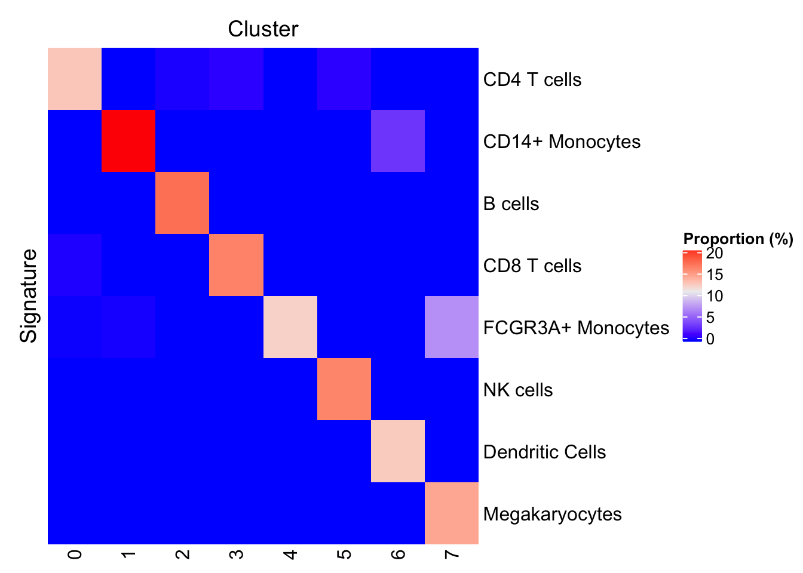

Learning Gene Signatures from the Seurat PBMC 3k Tutorial
Kevin Rue-Albrecht
19/12/2018
Example data set
First, load the SingleCellExperiment object of 10X Genomics 2,700 peripheral blood mononuclear cells (PBMC) preprocessed here.
sce <- readRDS("pbmc3k_tutorial.sce.rds")
sce## class: SingleCellExperiment
## dim: 13714 2638
## metadata(0):
## assays(2): counts logcounts
## rownames(13714): AL627309.1 AP006222.2 ... PNRC2.1 SRSF10.1
## rowData names(4): gene gene.mean gene.dispersion
## gene.dispersion.scaled
## colnames(2638): Cell1 Cell2 ... Cell2699 Cell2700
## colData names(6): nGene nUMI ... res.0.6 ident
## reducedDimNames(2): PCA TSNE
## spikeNames(0):Learning signatures from a data set
According to the tutorial, cluster “0” comprises CD4 T cells marked by the expression of the gene IL7R. When applying the IL7R signature, we have shown that indeed IL7R is expressed at a relatively high frequency in cluster “0” and much less frequently detected in all other clusters.
Now, let us programmatically identify the top 2 markers for each cluster by asking the question: “Which genes are detected (non-zero count) in the target cluster at a frequency at least 20% higher than any other cluster”?
In addition, the default behaviour of the function requires that–together–the genes that comprise each signature are co-detected in at least 10% of the target cluster (min.prop=0.1).
basesets <- learnSignatures(
sce, method = "PositiveProportionDifference",
cluster.col="ident", assay.type = "counts", threshold = 0, n = 2, min.diff = 0.2,
diff.method = "min", min.prop = 0.1)
knitr::kable(basesets)| element | set | markerProportion | combinedProportion |
|---|---|---|---|
| NOSIP | 0 | 0.6481321 | 0.1268462 |
| PIK3IP1 | 0 | 0.4178975 | 0.1268462 |
| S100A8 | 1 | 0.9728601 | 0.2171190 |
| CD14 | 1 | 0.6617954 | 0.2171190 |
| MS4A1 | 2 | 0.8596491 | 0.1725146 |
| CD79A | 2 | 0.9356725 | 0.1725146 |
| GZMK | 3 | 0.5876623 | 0.1623377 |
| CD8A | 3 | 0.5032468 | 0.1623377 |
| MS4A7 | 4 | 0.8025478 | 0.1210191 |
| RP11-290F20.3 | 4 | 0.8216561 | 0.1210191 |
| GZMB | 5 | 0.9548387 | 0.1612903 |
| GNLY | 5 | 0.9612903 | 0.1612903 |
| FCER1A | 6 | 0.8437500 | 0.1250000 |
| C1QBP | 6 | 0.8437500 | 0.1250000 |
| PPBP | 7 | 1.0000000 | 0.1428571 |
| PF4 | 7 | 1.0000000 | 0.1428571 |
Note that the table above does include some of the markers suggested in the Seurat tutorial (listed below). Namely, CD14 (CD14+ Monocytes), MS4A1 (B cells), CD8A (CD8 T cells), FCER1A (Dendritic Cells), PPBP (Megakaryocytes).
seuratTutorialMarkers <- list(
"CD4 T cells"=c("IL7R"),
"CD14+ Monocytes"=c("CD14", "LYZ"),
"B cells"=c("MS4A1"),
"CD8 T cells"=c("CD8A"),
"FCGR3A+ Monocytes"=c("FCGR3A", "MS4A7"),
"NK cells"=c("GNLY", "NKG7"),
"Dendritic Cells"=c("FCER1A", "CST3"),
"Megakaryocytes"=c("PPBP")
)
seuratTutorialMarkers <- as(seuratTutorialMarkers, "BaseSets")
seuratTutorialMarkers## BaseSets with 12 relations between 12 elements and 8 sets
## element set relationData elementData setData
## <IdVector> <IdVector> <DataFrame> <DataFrame> <DataFrame>
## 1 IL7R CD4 T cells
## 2 CD14 CD14+ Monocytes
## 3 LYZ CD14+ Monocytes
## 4 MS4A1 B cells
## 5 CD8A CD8 T cells
## ... ... ... ... ...
## 1 GNLY NK cells
## 2 NKG7 NK cells
## 3 FCER1A Dendritic Cells
## 4 CST3 Dendritic Cells
## 5 PPBP MegakaryocytesVisualizing signatures
Reduced dimension
Let us visualize the top 2 markers identified in this way for each cluster.
For reference, the cell type identity associated with markers mentioned in the Seurat tutorial is indicated in each panel subtitle, where applicable.
ggList <- list()
for (markerName in ids(elements(basesets))) {
ggDataFrame <- data.frame(
reducedDim(sce, "TSNE"),
logcounts=assay(sce, "logcounts")[markerName, ]
)
seuratIdentity <- subset(as(seuratTutorialMarkers, "data.frame"), element == markerName, "set", drop=TRUE)
if (length(seuratIdentity) == 0) { seuratIdentity <- " "} # trick to make equal plot dimensions
gg <- ggplot(ggDataFrame, aes(tSNE_1, tSNE_2, color=logcounts)) +
geom_point(size=0.1) +
scale_color_viridis_c() +
labs(title=markerName, subtitle=seuratIdentity, x=NULL, y=NULL) +
theme(
axis.text = element_blank(), axis.ticks = element_blank(),
title = element_text(size=rel(0.9)),
legend.text = element_text(size=rel(0.8)), legend.title = element_text(size=rel(0.8)),
legend.position = "bottom")
ggList[[markerName]] <- gg
}
cowplot::plot_grid(plotlist = ggList)
Interactively
It is possible to interactively set the names of each gene signature learned using an interactive Shiny app. For this purpose, we learn as many markers as possible for each cluster, and we pass both the signatures (as a BaseSets object) and the annotated SingleCellExperiment to the interactive app.
basesets <- learnSignatures(
sce, method = "PositiveProportionDifference",
cluster.col="ident", assay.type = "counts", threshold = 0, n = Inf, min.diff = 0.2)
scePred <- predict(basesets, sce, method="ProportionPositive", cluster.col="ident")
if (interactive()){
basesets <- runApp(shinyLabels(basesets, scePred))
}Note how the returned basesets object contains any update you may have done to the names of the gene sets interactively within the app.
Proportion of cells predicted for each signature
One may also visualize the proportion of cells positive for each signature in each cluster. If you renamed any signature in the previous chunk, the predict method should be run again to apply the new labels to the SingleCellExperiment object.
scePred <- predict(basesets, sce, method="ProportionPositive", cluster.col="ident")
plotProportionPositive(scePred, cluster_columns=FALSE, cluster_rows=FALSE)
Concepts
Scree detection plot
The learning method "PositiveProportionDifference" allows the trimming of candidate markers to those that are co-detected in a minimal proportion of samples in the target cluster. The trimming process starts from the most frequently detected marker and stop when the frequency of co-detection drops below the required minimal proportion; all candidate markers beyond this point are dropped. The motivation here is that for the purpose of defining qualitative gene signatures, it is useful to ensure that all of the combined gene set that makes up a signature is fully detected in a minimal proportion of samples.
To illustrate this process, the code chunk below computes and displays the proportion of cells in cluster "0" in which the N most frequently detected markers are co-detected. Specifically, the figure displays the proportion of samples with detectable expression of the most frequently detected gene, the two most frequently detected genes (simultaneously), etc.
# Choose a cluster for this example
cluster0 <- "0"
topMarkers <- 100
# Fetch only the cells of that cluster
sce0 <- sce[, sce$ident == cluster0]
# Extract a subset of the most frequently detected genes in those cells
freq0 <- Matrix::rowSums(assay(sce0, "counts"))
order0 <- order(freq0, decreasing=TRUE)
# Test whether each marker is detected in each cell
detection0 <- makeMarkerDetectionMatrix(sce0, head(rownames(sce0)[order0], topMarkers))
# Compute the simultaneous detection rate for increasing numbers of markers
scree0 <- makeMarkerProportionScree(detection0)
# Plot
ggplot(scree0, aes(markers, proportion)) +
geom_line() + geom_point(size=0.4) +
scale_y_continuous(limits=c(0, 1), labels = scales::percent) +
scale_x_continuous(limits=c(1, topMarkers)) +
theme(panel.grid.major=element_line(color="grey90", size=0.5)) +
labs(x="Number of top markers", y="Proportion positive for all markers")